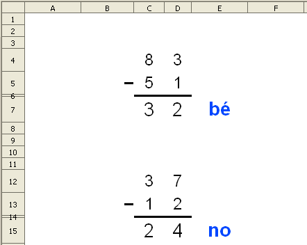

Introducció
En aquesta pràctica es faran activitats en que es puguin practicar la suma, la resta, la multiplicació i el càlcul mental del quocient i el residu d'unes senzilles divisions.
La suma
Presentació gràfica de l'activitat
Funcions que es fan servir en aquesta activitat
-
Operador de multiplicar (*)
Objectiu de l'activitat
Fer sumes de dos sumands, portant-ne o sense portar, de tres dígits en cada sumand.
Desenvolupament de l'activitat
1. Obrir el fitxer M2 i afegir un nou full amb el nom de M2P3 suma amb avaluació
2. Escriure el valor 0 a la cel·la A1
3. Formatar les cel·les dels rangs B4:E5 i C7:E7 amb els següents atributs:
-
tipus de lletra: arial
-
tipografia: normal
-
mida: 25
-
Alinear al centre verticalment
-
Alinear al centre horitzontalment
-
Amplada de columna: 0,80cm
-
Alçada de fila: 10mm
4. Escriure a les cel·les C4 i C5 el següent: =SI($A$1=0;ALEATENTRE(1;4))
5. Escriure a la cel·la D4 el següent: =SI($A$1=0;ALEATENTRE(1;9))
6. Copiar la cel·la D4 i enganxar-la a les cel·les del rang D4:E5
7. Escriure el signe de sumar (+) a la cel·la B5
8. Seleccionar les cel·les del rang B6:E6 i assigneu-li els següents atributs:
-
color de fons: negre.
-
alçada de fila: 1,5 mm.
9. Seleccionar les cel·les de rang de cel·les C7:E7 i fer que tinguin color gris de fons (gris 20%).
10.Escriure a la cel·la I4: =C4
11.Copiar la cel·la I4 a les cel·les del rang I4:K5
12. Seleccionar la cel·la F7 i assigneu-li els següents atributs:
-
color de la lletra: blau 5
-
tipus de lletra: arial
-
tipografia: negrita
-
mida: 20
13. Escriure a la cel·la I7 el següent: =SUMA(I4:I5)*100
14. Escriure a la cel·la J7 el següent: =SUMA(J4:J5)*10
15. Escriure a la cel·la K7 el següent: =SUMA(K4:K5)
16. Escriure a la cel·la J8 el següent: =SUMA(I7:K7)
El segon SI de la fórmula que hi ha a la cel·la F7, SI(J9=J8;"bé";"no")), significa que si els valors de les cel·les J9 i J8 són iguals, llavors apareix el "bé"; si no, apareix el "no".
Premen les tecles Ctrl+Maj+F9 també s'actualitzen els valors dels sumands. De fet, es recalculen totes les fórmules a tots els fulls.
En la imatge de les sumes d'aquesta pràctica, es poden veure les columnes I:K perquè no estan amagades. El suport que es necessita per comprovar si està bé la suma s'ha fet en les cel·les del rang I4:K9, però després aquest mateix rang de cel·les es pot desplaçar a qualsevol altre lloc, per exemple: al rang Q4:S9 on les columnes Q, R i S poden ser amagades. D'aquesta manera en la imatge de l'exemple es poden veure les columnes de la A fins la N.
Per desplaçar un grup de cel·les només cal fer clic a la primera cel·la i sense deixar de prémer el botó esquerre del ratolí es van seleccionant la resta de cel·les que convingui desplaçar formant sempre en la selecció una àrea rectangular o quadrada (no fent seleccions múltiples). Una vegada es té feta la selecció de cel·les (observar el canvi de color de les cel·les) i, sense sortir de l'àrea seleccionada, deixar de prémer amb el botó esquerre del ratolí i es torna a prémer el botó esquerre movent a la vegada el ratolí per desplaçar les cel·les seleccionades allí on convingui. Una altra opció seria tallar (Ctrl + X) i enganxar (Ctrkl + V).
20. Havent comprovat que la suma funcioni correctament, serà convenient amagar les cel·les del rang I4:K8. Aquesta acció d'amagar el contingut del rang es pot fer de diverses maneres:
-
a) Fer de color blanc la lletra del les cel·les del rang I4:k8.
-
b) Seleccionar el rang I4:k8, tallar-lo (Ctrl+ X) i copiar-lo (Ctrl+ V) en una columna en la qual no es vegin aquestes dades.
-
c) Amagar el rang de les columnes I:K seleccionant el rang I4:K4 i format|columna|amaga.
21. Protegir les cel·les que convingui.
22. Desar el fitxer.
Observacions:
Evidentment el valor de la cel·la A1 potser qualsevol. Només cal tenir en compte que el valor de la cel·la A1 sempre ha ser el mateix que el valor que es dóna a la fórmula
=SI($A$1=?;ALEATENTRE(1;4)). Si a la cel·la A1 se li dóna el valor 3, llavors caldrà escriure: =SI($A$1=3;ALEATENTRE(1;4)).
La resta sense portant-ne
Presentació gràfica de l'activitat

Funcions que es fan servir en aquesta activitat
-
Operadors de concatenar (&) i de restar (-)
Objectiu de l'activitat
Restar dos nombres de dos dígits sense portar-ne.
Desenvolupament de l'activitat
1. Obrir el fitxer M2 i afegir un nou full anomenat M2P3 restar sense portant-ne
1. Escriure el valor 0 a la cel·la A1
2. Formatar les cel·les dels rangs B4:D5 i C7:D7 amb els següents atributs:
-
tipus de lletra: arial
-
tipografia: normal
-
mida: 25
-
Alinear al centre verticalment
-
Alinear al centre horitzontalment
-
Amplada de columna: 0,80cm
-
Alçada de fila: 10mm
3. Escriure a les cel·les C4: =SI($A$1=0;ALEATENTRE(1;9))
4. Escriure a les cel·les C5: =SI($A$1=0;ALEATENTRE(1;C4))
6. Escriure a les cel·les D5: =SI($A$1=0;ALEATENTRE(1;D4))
9. Escriure el signe de restar (-) a la cel·la B5 i fer que les cel·les C6 i D6 tinguin una alçada d'1mm i que el color de fons sigui negre.
10. Seleccionar les cel·les de rang de cel·les C7:D7 i fer que el color de fons d'aquestes cel·les sigui gris 20%.
11. Seleccionar la cel·la F7 i assignar-li els següents atributs:
-
color de la lletra: blau 5
-
tipus de lletra: arial
-
tipografia: negrita
-
mida: 18
12. Escriure a la cel·la J4 el següent: =VALOR(C4&D4)
14. Escriure a la cel·la J7 el següent: =J4-J5
El segon SI de la fórmula que hi ha a la cel·la E7, SI(VALOR(C7&D7)=J7;"bé";"no")), significa que si el valor concatenat de les cel·les C7 i D7 és igual al valor de la cel·la J7, llavors apareix el "bé"; si no, apareix el "no".
Comprovació de l'activitat:
Escrivint el valor 0 a la cel·la A1, haurien de canviar els valors de la resta. Si es fa la resta correctament, hauria d'aparèixer el "bé" de l'avaluació; si no, hauria d'apareixer el "no".
Havent comprovat que la suma funcioni correctament, serà convenient amagar les cel·les del rang I4:K8. Aquesta acció d'amagar el contingut del rang es pot fer de diverses maneres:
-
a) Fer de color blanc la lletra del les cel·les del rang H4:J7.
-
b) Seleccionar el rang H4:J7, tallar-lo (Ctrl+ X) i copiar-lo (Ctrl+ V) en una columna en la qual no es vegin aquestes dades.
-
c) Amagar el rang de les columnes H:J seleccionant el rang H4:J4 i format|columna|amaga.
17. Protegir les cel·les que convingui.
18. Desar el fitxer M2.
Observacions:
En aquesta activitat el valor del minuend sempre és igual o superior al valor del subtrahend presentant així restes sense portar-ne. Observeu el gràfic següent:
Restar portant-ne
En les restes portant-ne caldrà donar l'opció que el valors dels dígits del subtrahend puguin ser superiors als dígits del minuend. Evidentment el dígit que correspon al primer dígit del nombre subtrahend, el de l'esquerra, no
deurà ser superior al minuend.
En aquesta activitat es farà una resta de dos nombres de dos dígits i amb la possibilitat de que el valor de la unitat del subtrahend sigui superior al valor de la unitat del minuend (resta portant-ne).
Presentació gràfica de l'activitat
Funcions que es fan servir en aquesta activitat
-
Operador de concatenar (&) i de restar (-)
Objectiu de l'activitat
Restar dos nombres de dos dígits portar-ne.
Desenvolupament de l'activitat
1. Obrir el fitxer M2 i afegir un nou full anomenant-lo M2P3 restar portantne. No escriure "portant-ne" perquè el guió és un caràcter no vàlid per escriure'l al nom del full.
1. Escriure el valor 0 a la cel·la A1
2. Formatar les cel·les del rang A1:N14 amb els següents atributs:
-
tipus de lletra: arial
-
tipografia: normal
-
mida: 25
3. Escriure a la cel·la C4: =SI($A$1=0;ALEATENTRE(2;9))
4. Escriure a les cel·les C5: =SI($A$1=0;ALEATENTRE(1;C4-1))
6. Escriure el signe de restar (-) a la cel·la B5
7. Seleccionar les cel·les de rang de cel·les C7:D7 i formatar-les de color gris de fons (gris 20%).
8. Seleccionar la cel·la E7 i assigneu-li els següents atributs:
-
color de la lletra: blau 5
-
tipus de lletra: arial, tipografia: negrita, mida: 20
-
tipografia: negrita
-
mida: 20
9. Escriure a la cel·la J4 el següent: =VALOR(C4&D4)
10. Copiar la cel·la J4 i enganxar-la a la cel·la J5
11. Escriure a la cel·la J7 el següent: =J4-J5
12. Escriure a la cel·la E7 el següent: =SI(O(C7="";D7="");"";SI(VALOR(C7&D7)=J7;"bé";"no"))
Comprovació de l'activitat:
Escrivint el valor 0 a la cel·la A1, haurien de canviar els valors de la resta. Si es fa la resta correctament, hauria d'aparèixer el "bé" de l'avaluació; si no, hauria
d'apareixer el "no".
Havent comprovat que la resta funcioni correctament, serà convenient amagar les cel·les del rang J4:J7. Aquesta acció d'amagar el contingut del rang es pot fer de diverses maneres:
-
a) Fer de color blanc la lletra del les cel·les del rang J4:J7.
-
b) Seleccionar el rang J4:J7, tallar-lo (Ctrl+ X) i copiar-lo (Ctrl+ V)en una columna en la qual no es vegin aquestes dades.
-
c) Amagar les columnes corresponents a les cel·les a amagar. En aquest cas seria amagar la columna J anant a format|columna|amaga.
13. Protegir les cel·les que convingui.
14. Ocultar les cel·les que convingui.
15. Desar el fitxer M2.
La multiplicació
Multiplicació d'un nombre de tres dígits per un altre número d'un dígit.
Presentació gràfica de l'activitat
Funcions que es fan servir en aquesta activitat
-
Operadors de concatenació (&) i de multiplicar (*)
Objectiu de l'activitat
Fer una multiplicació on el primer factor és un número de tres dígits i el segon factor és un número d'un dígit.
Desenvolupament de l'activitat
1. Obrir el fitxer M2 i afegir un nou full anomenant-lo M2P3 multiplicació 3 1.
2. Fer que la presentació del format de les multiplicacions sigui semblant al de presentació gràfica de l'activitat.
3. Escriure el valor 0 a la cel·la A1
4. Escriure a les cel·les C4: =SI($A$1=0;ALEATENTRE(1;9))
5.Copiar la cel·la C4 i enganxar-la a les cel·les D4, E4 i E5
6. Escriure el signe de multiplicar (X) a la cel·la B5
7. Seleccionar les cel·les de rang de cel·les B7:E7 i formatar-les de color gris de fons (gris 20%).
8. Seleccionar la cel·la F7 i assigneu-li els següents atributs:
-
color de la lletra: blau 5
-
tipus de lletra: arial 20
-
tipografia: negrita
-
mida: 20
9. Escriure a la cel·la H4 el següent: =C4
10. Copiar la cel·la H4 i copiar-la a les cel·les I4 i J4.
11. Escriure a la cel·la K4 el següent: =VALOR(H4&I4&J4)
12. Escriure a la cel·la J7 el següent: =VALOR(B7&C7&D7&E7) (és possible que doni error pel fet de que no hagi res escrit en les cel·les del rang B7:E7 la
13. Escriure a la cel·la K5: =E5
14. Escriure a la cel·la K7: =K4*K5
15. Escriure a la cel·la F7 el següent: =SI(E7="";"";SI(LONG(J7)<>LONG(K7);"";SI(J7=K7;"bé";"no")))
17. Comprovar que funcioni correctament l'activitat.
18. Desar el fitxer M2.
Multiplicació desenvolupada d'un número de tres dígits per un altre de dos dígits.
Presentació gràfica de l'activitat
Funcions que es fan servir en aquesta activitat
-
Operadors de concatenació (&), de sumar (+) i de multiplicar (*)
Objectiu de l'activitat
Fer una multiplicació on el primer factor és un número de tres dígits i el segon factor és un número de dos dígits.
Desenvolupament de l'activitat
1. Obrir el fitxer M2 i afegir un nou full anomenant-lo M2P3 multiplicació 3 2.
2. Fer que la presentació del format de les multiplicacions sigui semblant al de presentació gràfica de l'activitat.
3. Escriure a la cel·la F4: =SI($A$1=0;ALEATENTRE(1;9))
4. Copiar la fórmula de la cel·la F4 al rang de les cel·les G4:H5
5. Escriure el signe de multiplicar (X) a la cel·la E5
6. Formatar l'alçada de la fila 6 a un 1 mm i fer que tingui color negre el fons de les cel·les del rang F6:H6
7. Seleccionar les cel·les de rang de cel·les E7:H7 i formatar-les de color gris de fons (gris 10%).
8. Seleccionar les cel·les de rang de cel·les D8:G8 i formatar-les de color gris de fons (gris 10%).
9. Formatar l'alçada de la fila 9 a un 1 mm i fer que tingui color negre el fons de les cel·les del rang D9:H9
10. Seleccionar les cel·les de rang de cel·les D10:H10 i formatar-les de color gris de fons (gris 10%).
11. Escriure a la cel·la K4: =VALOR(F4&G4&H4)
12. Escriure a la cel·la K5: =VALOR(G5&H5)
13. Escriure a la cel·la K7: =K4*H5
15. Escriure a la cel·la I7: =SI(H7="";"";SI(LONG(J7)<>LONG(K7);"";SI(J7=K7;"bé";"no")))
16. Escriure a la cel·la K8: =K4*G5
18. Escriure a la cel·la I8: =SI(G8="";"";SI(LONG(J8)<>LONG(K8);"";SI(J8=K8;"bé";"no")))
Havent arribat fins aquí, ara caldra fer la suma:
19. Escriure a la cel·la K10: =K7+K8*10
Es pot aconseguir el mateix efecte de manera diferent.
21. Escriure a la cel·la I10: =SI(H10="";"";SI(LONG(J10)<>LONG(K10);"";SI(J10=K10;"bé";"no")))
22. Comprovar que l'activitat funcioni correctament.
23. Protegir les cel·les que convingui.
24. Ocultar les cel·les que convingui.
25. Desar el fitxer M2.
Quocient i residu
Presentació gràfica de l'activitat

Funcions que es fan servir en aquesta activitat
-
Operadors de restar (-), multiplicar (*) i restar (-)
Objectiu de l'activitat
En aquesta activitat es tracta de calcular mentalment els quocients i el residus d'unes divisions.
Desenvolupametn de l'activitat
1. Obrir el fitxer M2 i afegir un nou full anomenant-lo M2P3 quocient i residu.
2. Formatar les cel·les del rang C4:H9 amb els següents atributs:
-
Tipus de lletra: arial
-
Tipografia: normal
-
Mida: 14
-
Alçada de les fila 3: 14mm
-
Alçada de les files del rang C5:H9: 9mm
-
Amplada de les de les cel·les C4:H9: 28mm
-
Color de fons de les cel·les del rang E5:E9: taronja 4
-
Color de fons de les cel·les del rang G5:G9:taronja 4
-
Color de la lletra de les cel·les del rang F5:F9: blau 5
-
Color de la lletra de les cel·les del rang H5:H9: blau 5
3. Escriure a la cel·la C4: dividend
4. Escriure a la cel·la D4: divisor
5. Escriure a la cel·la E4: quocient
6. Escriure a la cel·la G4: residu
7. Escriure a les cel·les del rang C5:C9 el següent: =SI($A$1=0;ALEATENTRE(10;20))
8. Escriure a les cel·les del rang D5:D9 el següent: =SI($A$1=0;ALEATENTRE(1;9))
9. Escriure en la cel·la F5 següent: =SI(E5="";"";SI(E5=J5;"bé";"no"))
10. Copiar la fórmula de la cel·la F5 a les cel·les del rang F6:F9
11. Escriure en la cel·la H5 següent:=SI(G5="";"";SI(G5=K5;"bé";"no"))
12. Copiar la fórmula de la cel·la H5 en les cel·les del rang H6:H9
13. Escriure en la cel·la J5 següent:=QUOCIENT(C5;D5)
15. Escriure en la cel·la k5 següent: =MOD(C5;D5)
17. Comprovar que l'activitat funcioni correctament.
18. Protegir les cel·les que convingui.
19. Ocultar les cel·les que convingui.
20. Desar el fitxer M2.